Credits & IAP
The whole monetization surface: SubscribeModal (Muse Pro — six plans across a Weekly/Monthly/Yearly duration Tab Bar), BuyCreditsModal (six credit packs, subscriber-only), and the /profile/credits route (balance, All/Spend/Earn ledger filter, and a purchase CTA that branches on subscription state).
| Platform | YouCam Muse Web — captured at 1403×697 (desktop only, D8) |
| Audience | QA |
| Scope | SubscribeModal (all three duration tabs, both tiers, subscribe, and the already-Pro branch), BuyCreditsModal (packs, selection, purchase), the CR-06 free-user gate on every entry point, /profile/credits (balance, filter, ledger, branching CTA), and the apiError / creditsEmpty states. |
| Out of scope | The in-flow insufficient-balance route into IAP (GL-01/AC-CR-07 — it starts on /mv/room or /song/create, areas 02/03); how generation SPENDS credits (area 11); real store integration, which does not exist (see Prototype vs production). |
| Source | specs/areas/07-credits-iap.md (§§1-9, AC-CR-01..11) and the running app |
↓ Flow Diagram — full user journey (click to expand)
Mermaid source
flowchart TD
Entry["Any Upgrade / credit-pill entry point"] --> Sub{subscribed?}
Sub -->|no| Plans["Plan dialog: Weekly | Monthly | Yearly, two tiers each"]
Plans -->|a card Subscribe| Granted["subscriber + that plan's credits + toast"]
Granted --> Shell["Shell shows the plan; Upgrade controls disappear"]
Plans -.->|subscribed flips while open| AlreadyPro["Already on Muse Pro + Done (Q-01)"]
Sub -->|yes| Packs["Buy Credits: six packs, 2,000 preselected"]
Packs -->|Buy Now| Added["credits added (toast only from Credits detail, Q-02)"]
Buy["Buy Credits entry point"] --> Gate{subscribed?}
Gate -->|no| Plans
Gate -->|yes| Packs
Detail["/profile/credits"] --> Bal["Balance (live) + All/Spend/Earn + ledger (seed)"]
Bal --> Cta{subscribed?}
Cta -->|yes| Packs
Cta -->|no| Plans
Demo["?demo=1 panel"] -.->|backend error| Err["Error body + Retry, on either dialog"]
Demo -.->|empty ledger| Empty["No activity yet; balance + filter retained"]
| ID | Path | Entry point | Steps | Outcome |
|---|---|---|---|---|
| P1 | Subscribe to Muse Pro | Any Upgrade control while signed in and NOT subscribed | 6 steps | The account becomes a subscriber, the plan’s own credits are granted, and the shell reflects PRO |
| P2 | Already on Muse Pro | The plan dialog is open when `subscribed` becomes true | 1 steps | The plan cards are replaced by a confirmation with a single Done action |
| P3 | Buy a credit pack (subscriber) | Any Buy-Credits entry point while subscribed | 3 steps | The pack’s credits are added to the balance and the dialog closes |
| P4 | Free user and Buy Credits (CR-06) | Any credits entry point while signed in and NOT subscribed | 2 steps | The plan dialog opens; no Buy-Credits UI is ever shown |
| P5 | Credits detail | /profile/credits (auth-gated) | 4 steps | Balance + filtered ledger + a purchase CTA appropriate to the account |
| P6 | Error & empty states | ?demo=1, then the matching switch | 5 steps | Each surface shows its own failure or empty treatment |
Where the dialog opens from, the duration Tab Bar and its six plans, and what a Subscribe press actually changes.
- P1-S1 Opens /profile while signed in and not subscribed.
- P1-S2 Taps any Upgrade control.
- P1-S3 Taps the Monthly tab.
- P1-S4 Taps the Yearly tab.
- P1-S5 Presses Subscribe on one of the cards.
- P1-S6 —
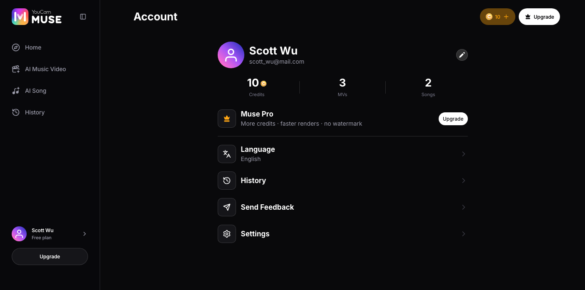
- 1Upgrade (Muse Pro row)
- 2Upgrade (sidebar)
- 3Upgrade (header crown)
- Sidebar plan label: “Free plan”
- Every Upgrade entry point in the app opens the SAME `SubscribeModal`; none of them is a different screen.Area 07 §1. The full set is the Muse Pro row, the sidebar footer, the header crown, and (on other routes) RoomNavbar/DetailNavbar/MobileHeader plus MV Settings’ High-quality crown.
- Each one is conditioned on NOT being subscribed.Once subscribed, none of them renders an Upgrade affordance any more — which is why P2 needs the route it uses.
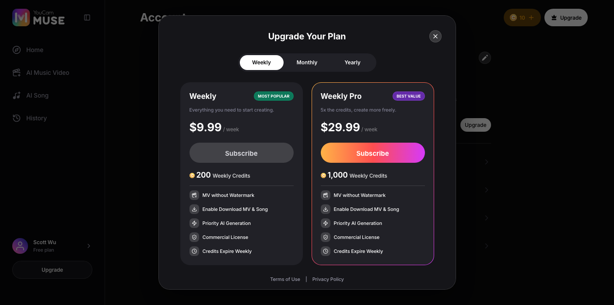
- 1Weekly tab (default)
- 2Subscribe (Weekly Basic)
- 3Subscribe (Weekly Pro)
- 4Terms of Use
- Dialog title: “Upgrade Your Plan”
- Duration tabs: “Weekly”, “Monthly”, “Yearly”
- Weekly: “$9.99” / week, “200” Weekly Credits, badge “MOST POPULAR”
- Weekly Pro: “$29.99” / week, “1,000” Weekly Credits, badge “BEST VALUE”
- Benefit rows: “MV without Watermark”, “Enable Download MV & Song”, “Priority AI Generation”, “Commercial License”
- Expiry line: “Credits Expire Weekly”
- Footer: “Terms of Use” | “Privacy Policy”
- There is NO shared selection on desktop — each card subscribes itself.AC-CR-09. `DEFAULT_PLAN_ID` still exists as the Business Model’s stated default but does not drive this screen.
- The billing period is per-plan, not a fixed string.The Yearly cards read “/ year”, not “/ week” — see P1-S4. The designer comp hardcodes “/ week” on every card; the build deliberately does not.
- The two footer links are REAL URLs, not placeholders.AC-CR-04. They replaced a “Restore Purchases | Demo only” row on 2026-09-01 — web does not offer Restore Purchases at all, it is an app-only affordance.
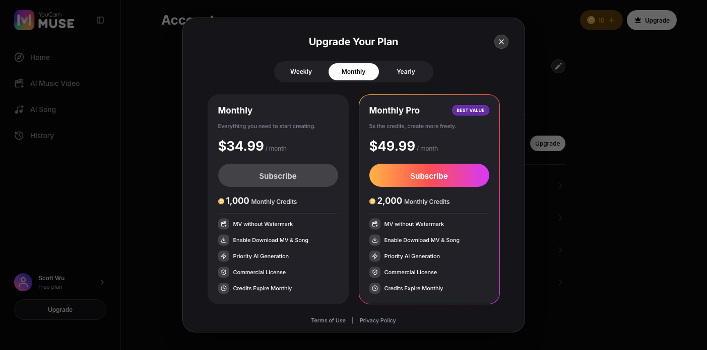
- 1Monthly tab
- Monthly: “$34.99” / month, “1,000” Monthly Credits
- Monthly Pro: “$49.99” / month, “2,000” Monthly Credits
- Expiry line: “Credits Expire Monthly”
- Switching a tab changes only which pair of plans is shown.It is not a selection and it commits nothing — no purchase happens until a card’s own Subscribe is pressed.
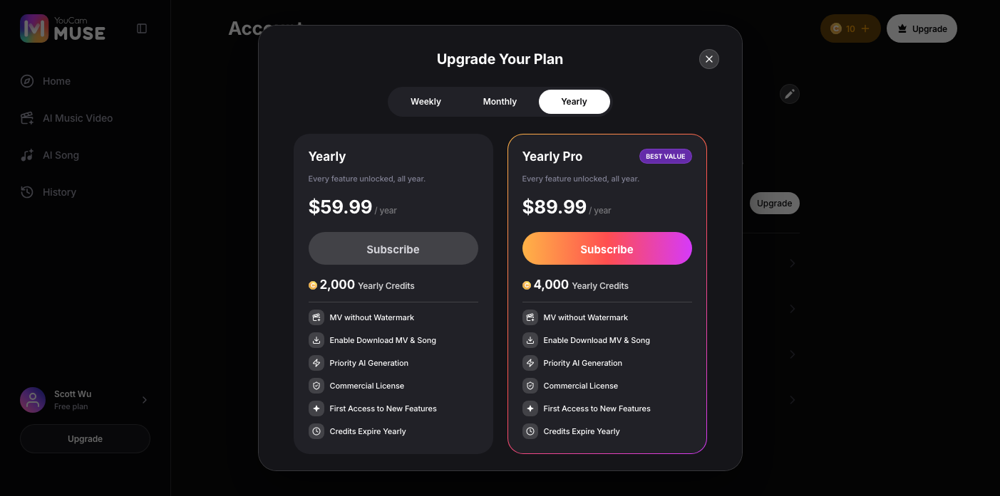
- 1Yearly tab
- 2Yearly-only benefit
- Yearly: “$59.99” / year, “2,000” Yearly Credits
- Yearly Pro: “$89.99” / year, “4,000” Yearly Credits
- Expiry line: “Credits Expire Yearly”
- Yearly plans carry an extra benefit row the weekly/monthly ones do not.`YEARLY_EXTRA_FEATURES` — see the framed region in this capture.
- All six prices are the confirmed FINAL web pricing.Area 07 §1. Web and app are priced separately and must not be reconciled against each other.
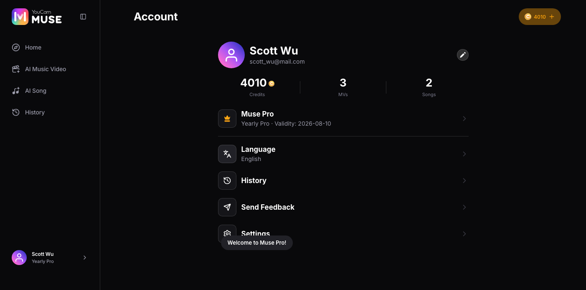
- The credits granted are the PICKED plan’s own `credits` value, not a fixed number.AC-CR-02. This is why P1 subscribes with a real card press rather than the demo panel’s shortcut — the shortcut could not demonstrate it.
- No payment step of any kind occurs.AC-CR-01/02 are satisfied entirely in memory — see Prototype vs production.
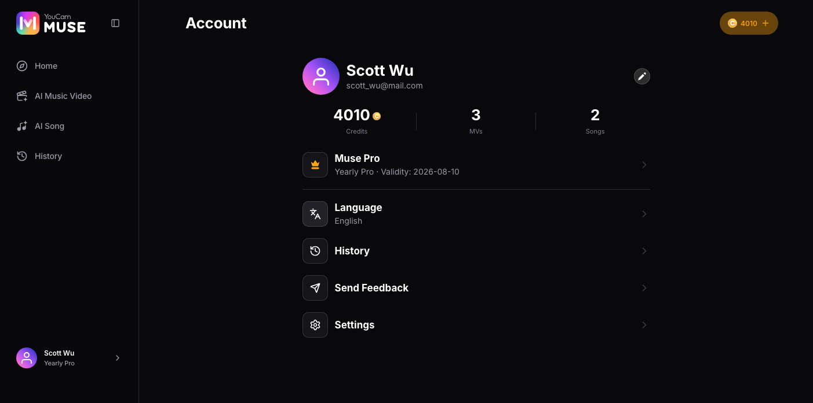
- 1Sidebar plan
- 2Muse Pro row
- The header credit count now includes the granted credits.AC-CR-09 — the count and the expiry cadence both track the plan actually subscribed to.
- The Muse Pro row now navigates to /profile/credits instead of opening the dialog (P5).
The CR-05 branch that prevents a subscriber buying a second subscription — and the one route by which it can actually be reached.
- P2-S1 Is already a subscriber while the plan dialog is open.
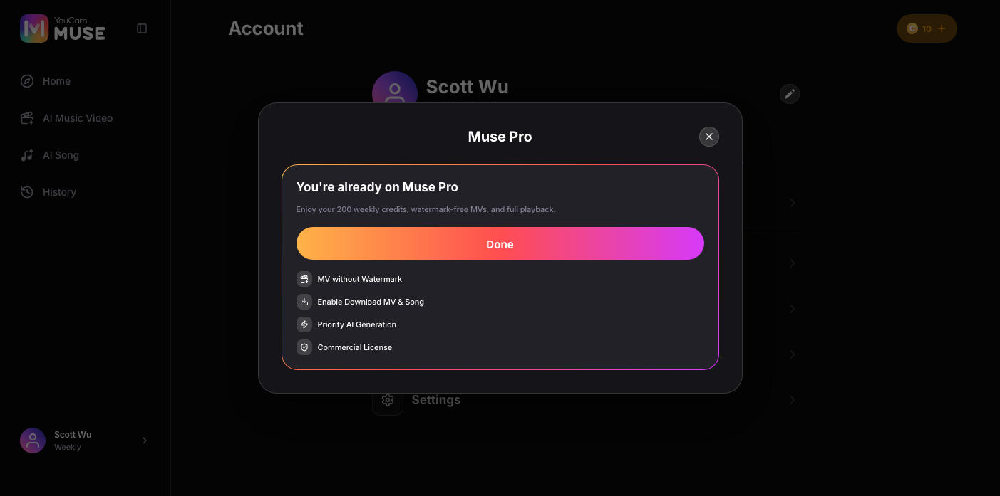
- 1Done
- Dialog title: “Muse Pro”
- Heading: “You’re already on Muse Pro”
- Action: “Done”
- There is no plan picker and no way to re-subscribe from this state.AC-CR-06 — without this branch a subscriber could buy a second subscription.
- This state has NO live trigger once you are a subscriber.Every `openSubscribe()` call site in the app is conditioned on `!subscribed`, so nothing reopens the dialog afterwards. The only way it renders for real is the one the code supports: the dialog stays mounted while `subscribed` flips true underneath it. Recorded as Q-01.
- Restore Purchases is NOT reachable here, and no longer exists anywhere.It was removed on 2026-09-01 — web does not support it. AC-CR-06’s old warning about it being unreachable from this branch is therefore moot.
The six packs, the default selection, the discount presentation, and what a purchase changes.
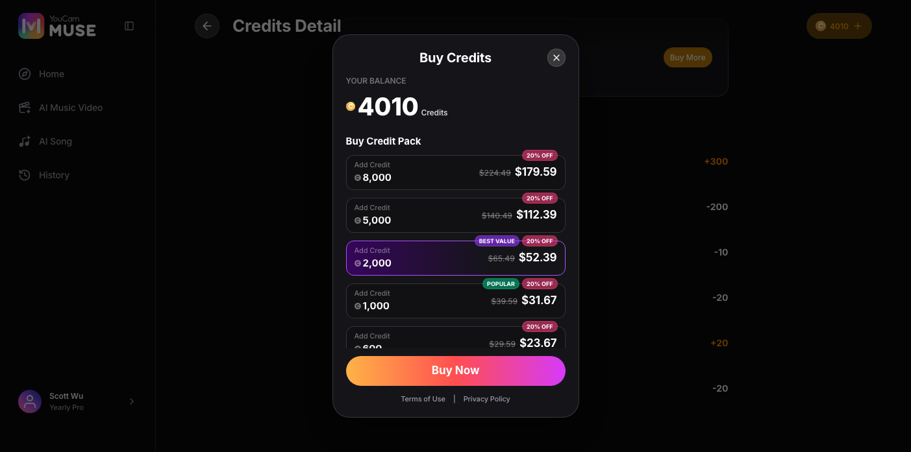
- 1Default selection (2,000, BEST VALUE)
- 2POPULAR + discount badge
- 3Buy Now
- Dialog title: “Buy Credits”
- Balance label: “YOUR BALANCE”
- Section label: “Buy Credit Pack”
- Pack sizes, top to bottom: “8,000”, “5,000”, “2,000”, “1,000”, “600”, “300”
- Tier badges: “BEST VALUE” on 2,000, “POPULAR” on 1,000
- Action: “Buy Now”
- 2,000 is pre-selected.`DEFAULT_CREDIT_PACK_ID`, the Business Model’s stated default.
- A card can carry its tier badge and a discount badge at the same time.Visible on 2,000 and 1,000 in this capture.
- The discount presentation is a set of UI ELEMENTS; its numbers are not spec.AC-CR-10 — a struck-through list price, an “N% OFF” badge per pack, and the discounted price on the CTA. The percentage, its rounding, and whether any discount runs at all are backend/marketing-owned and change at will.
- Purchased credits are valid 2 years and are non-refundable.AC-CR-04 — this dialog carries that copy; the plan dialog and the ledger do not.
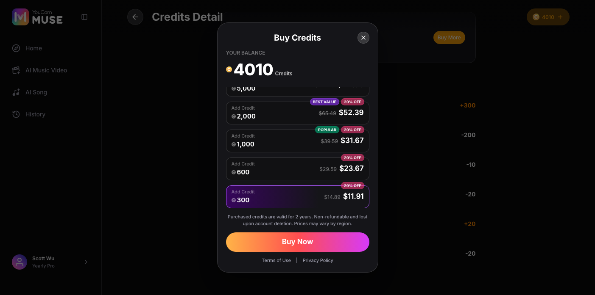
- 1Selected pack
- Exactly one pack is selected at a time; nothing is committed until Buy Now.
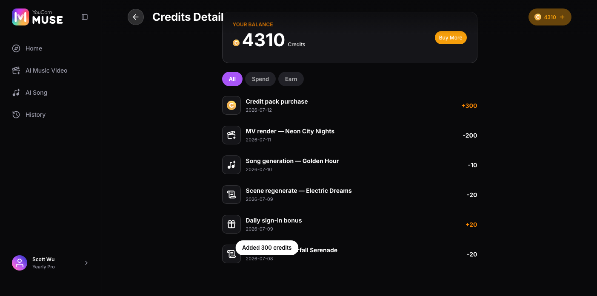
- No payment step occurs — the balance is mutated directly.AC-CR-01. See Prototype vs production.
- The toast only appears for a purchase made from /profile/credits’ own Buy More.The shared dialog every header credit pill opens is mounted with no `onPurchased` callback anywhere in the app, so buying through a header pill adds the credits silently. Recorded as Q-02 — this is a real inconsistency, not a capture artefact.
Credit packs are subscriber-only. What a free user sees at each entry point instead.

- 1Muse Pro row -> Subscribe
- 2Sidebar -> Subscribe
- 3Header crown -> Subscribe
- 4Credit pill -> Buy Credits (redirects, CR-06)
- Credit packs are subscriber-only.AC-CR-08 — the Business Model’s Final Decision, independently confirmed by the pricing deck’s own “free user can buy? no” row.
- 1Dialog title reads "Upgrade Your Plan"
- Dialog title: “Upgrade Your Plan”
- There is NO intermediate gate screen.AC-CR-08 — no “credit packs are a Muse Pro perk” interstitial and no “See Muse Pro Plans” step. `BuyCreditsModal` renders `SubscribeModal` itself, which is what makes the label and the destination impossible to drift apart.
The /profile/credits route: balance, the All/Spend/Earn filter, the ledger, and a CTA that branches on subscription state.
- P5-S1 Opens /profile/credits while subscribed.
- P5-S2 Taps Spend.
- P5-S3 Taps Earn.
- P5-S4 Opens the same route as a free user.
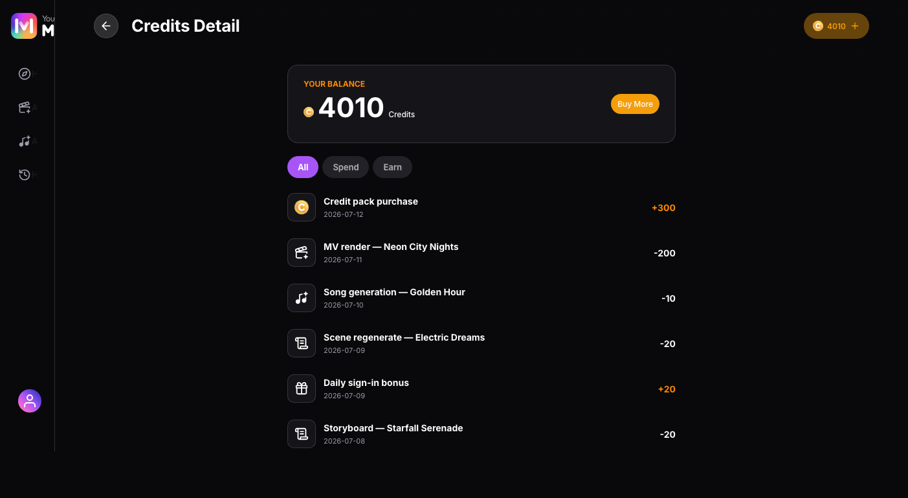
- 1Balance card
- 2Buy More
- 3All / Spend / Earn
- Route title: “Credits Detail”
- Balance label: “YOUR BALANCE”
- Filter tabs: “All”, “Spend”, “Earn”
- CTA (subscriber): “Buy More”
- This is a ROUTE, not a modal.It is deep-linkable and survives browser back/forward — the reason it stopped being a modal on 2026-08-11.
- The ledger is a fixed seed and does NOT reflect purchases made in this session.AC-CR-03 — the balance card is live, the rows below it are not. See Prototype vs production.
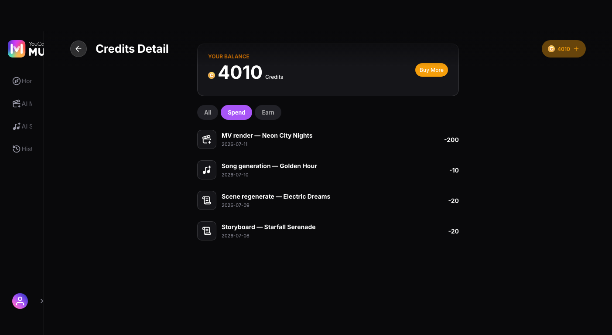
- The filter derives from the SIGN of each entry’s amount.There is no stored category — Spend is the negative rows, Earn the positive ones.
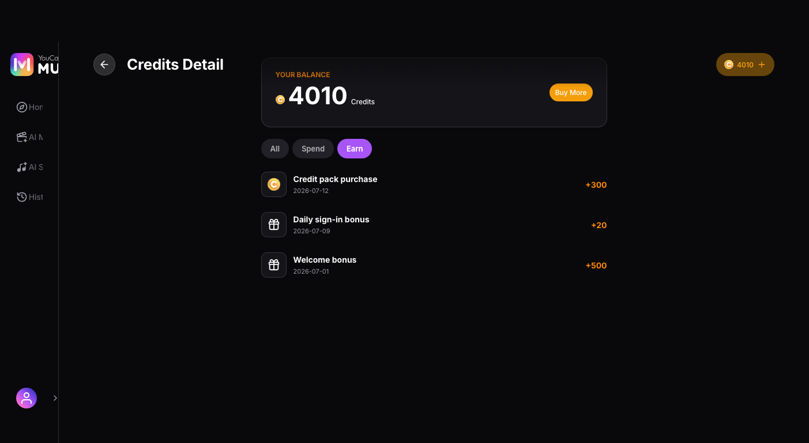
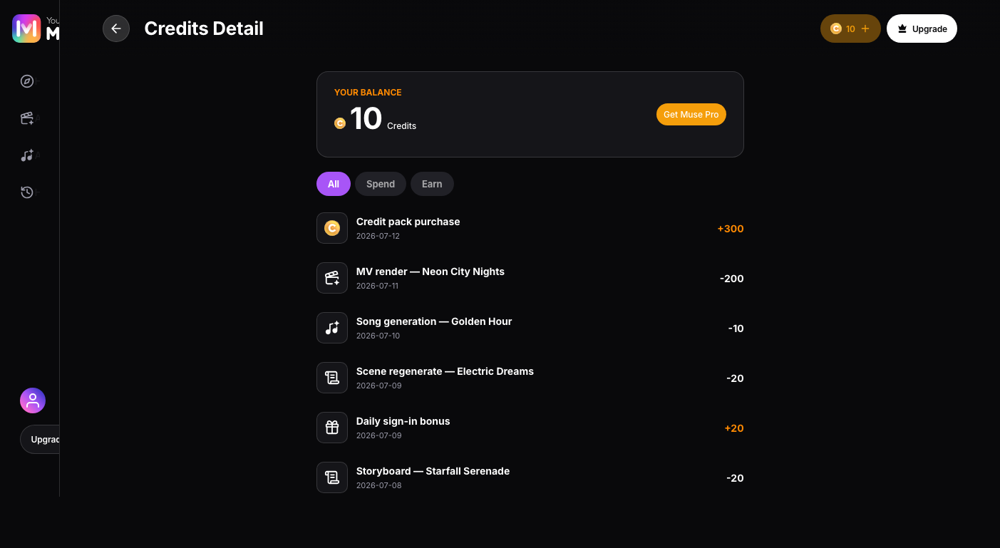
- 1Get Muse Pro
- CTA (free user): “Get Muse Pro”
- Both labels open the same control, which itself branches on subscription state.AC-CR-08 — that is deliberate: the label and its destination cannot drift apart, because there is only one destination.
- A brand-new account never sees an EMPTY ledger in practice.Sign-up grants 10 credits, so there is always at least one entry. The genuinely-empty case is P6-S4.
The backend-failure state on both dialogs and the empty ledger — all three reachable only through the ?demo=1 panel.
- P6-S1 Turns on the demo panel’s backend-error switch, then opens the plan dialog.
- P6-S2 With the same switch on, opens Buy Credits as a subscriber.
- P6-S3 With the same switch on, opens Buy Credits as a FREE user.
- P6-S4 Turns on the demo panel’s empty-ledger switch and opens /profile/credits.
- P6-S5 Taps Spend, then Earn.
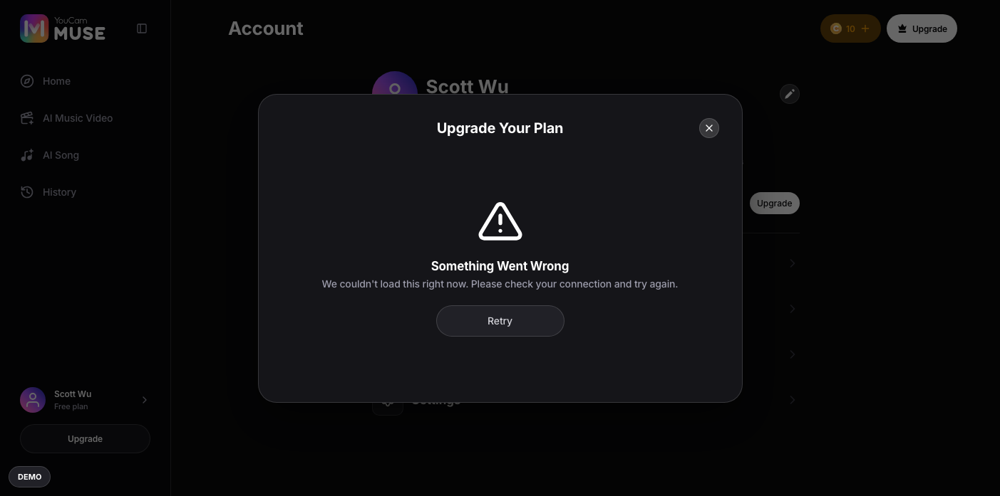
- 1Retry
- Heading: “Something Went Wrong”
- Body: “We couldn’t load this right now. Please check your connection and try again.”
- Action: “Retry”
- The error replaces the dialog BODY, not the dialog.The title and close control stay, so the user is never trapped.
- This state has no organic trigger in this build.There is no real backend to fail — the `?demo=1` panel is the only way to reach it, which is exactly why the panel exists.
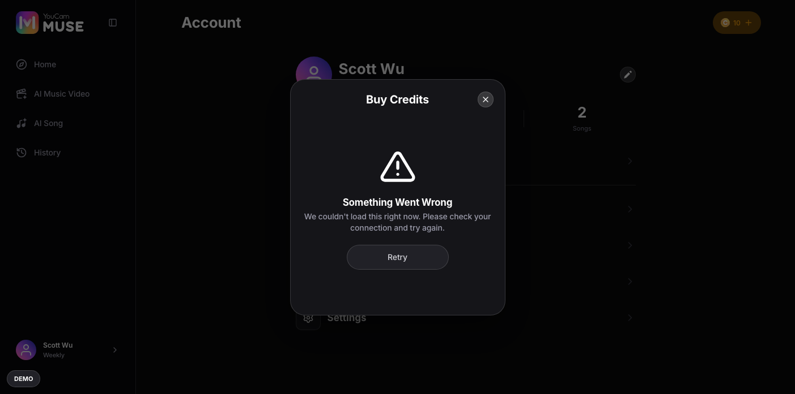
- 1Retry
- Both dialogs read the same flag and render the same treatment.One state, two surfaces — not two independently-worded errors.

- CR-06 is applied BEFORE the error state.AC-CR-08 holds even when the backend is failing: a free user is redirected to the plan dialog first, so the error they see is that dialog’s. This is the interaction between the two rules, and it is the reason this step exists as its own capture.
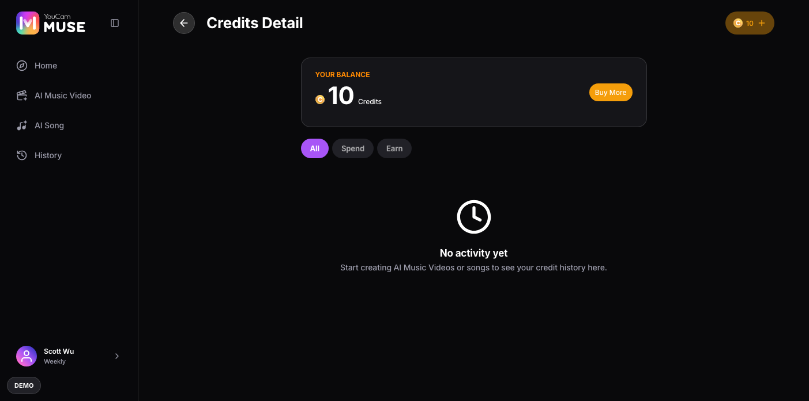
- Heading: “No activity yet”
- Body: “Start creating AI Music Videos or songs to see your credit history here.”
- The balance card and the filter remain — only the rows are replaced.The balance is real state; the ledger is what is empty.
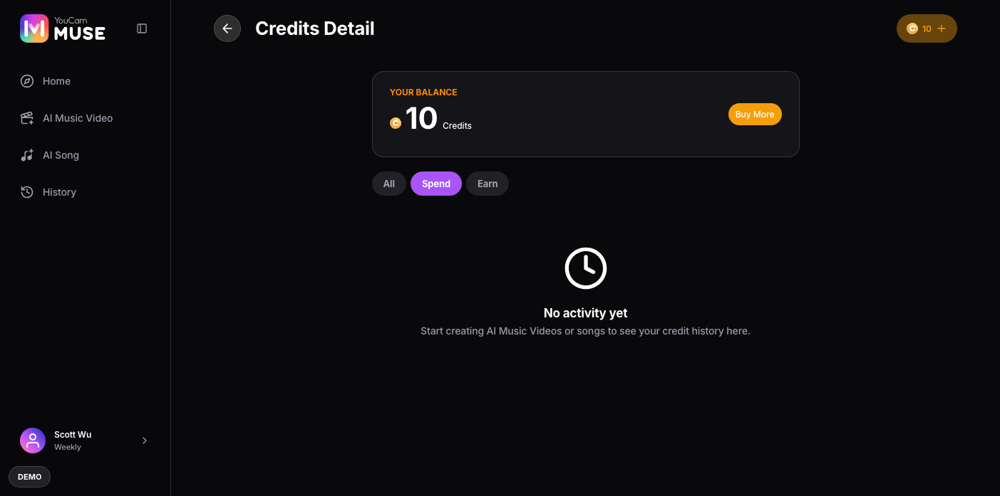
- Verified for all three tabs during capture; only Spend is shown, since Earn is identical.
The contract of each screen state. The flow diagram shows the transitions; this shows what each state must render.
| State | Entry condition | Visible / enabled | Transitions | Exit |
|---|---|---|---|---|
| Plan dialog | Not subscribed | Duration Tab Bar + the duration’s two plan cards | A card’s Subscribe → subscriber + that plan’s credits | Close, or Subscribe |
| Plan dialog | Subscribed (flipped while open) | Already-on-Muse-Pro confirmation, no cards | Done → closes; nothing else is offered | Done |
| Plan dialog | Backend error (demo) | Error body, dialog title retained | Retry | Close, or Retry |
| Buy Credits | Subscribed | Balance + six packs, 2,000 pre-selected | Buy Now → credits added | Close, or Buy Now |
| Buy Credits | NOT subscribed | Renders the plan dialog instead — no pack UI at all | Whatever the plan dialog offers | N/A (CR-06) |
| Credits detail CTA | Subscribed | “Buy More” | Opens Buy Credits (packs) | N/A |
| Credits detail CTA | NOT subscribed | “Get Muse Pro” | Opens Buy Credits, which renders the plan dialog | N/A |
| Credits ledger | Empty (demo) | Balance + filter retained, rows replaced by an empty state | Filters still switch; all three are empty | N/A |
Undecided, and blocking something. Everything settled lives beside the rule it governs, not here.
| ID | Question | Blocks | Owner |
|---|---|---|---|
| Q-01 | CR-05’s already-on-Muse-Pro state has no live trigger: every `openSubscribe()` call site is conditioned on `!subscribed`, so once an account subscribes nothing reopens the dialog. It renders only if `subscribed` flips while the dialog is already open. Is the state still wanted, and if so does something need to be able to open it? | Whether P2 describes a state a real user can ever reach, or only a defensive branch | Product owner |
| Q-02 | A pack purchase toasts only when it was started from /profile/credits’ own Buy More. The shared dialog every header credit pill opens is mounted with no `onPurchased` callback anywhere in the app, so buying through a header pill adds credits with no confirmation at all. Intended, or an oversight? | Whether P3-S3’s confirmation is a rule or an accident of which entry point was used | Product owner / RD |
| Q-03 | The confirmed pricing deck lists PRICES but no store identifiers, so the build still carries app-shaped SKUs (`ycm_ios_*` for packs, `subscribe_*_ycm` for plans) that have never been confirmed for web. | Real store integration — RD cannot wire a purchase to an unconfirmed SKU | RD (tracked as TBD-CR-11) |
| Q-04 | What does “cost per the Credit Consume MSR” resolve to, generally? (Carried per the programme’s own convention; no step in THIS spec quotes a generation cost — Credits/IAP grants credits, it does not spend them.) | N/A to this spec’s own steps; recorded because every spec in the programme carries this row | Product / RD (the MSR document link is still TBD) |
Every acceptance criterion in plan.md and where this spec defines it — 9 of 11 map to a step. Write the test cases in your test tool; this table is the trace back to the spec.
| Criterion | What it asserts | Specified in |
|---|---|---|
| AC-CR-01 | WHEN a credit pack is purchased, THE SYSTEM SHALL add the pack’s credits to the balance, toast, and close — with no real payment step. | P3-S3 |
| AC-CR-02 | WHEN a plan is subscribed, THE SYSTEM SHALL set the account to subscriber, add the plan’s credits, and reflect PRO status in the shell/profile. | P1-S5 · P1-S6 |
| AC-CR-03 | WHEN a signed-in user opens /profile/credits, THE SYSTEM SHALL show the current balance, the All/Spend/Earn filter, the static transaction ledger, and a purchase CTA. | P5-S1 · P5-S2 · P5-S3 |
| AC-CR-04 | THE SYSTEM SHALL show the per-surface footer copy: real Terms of Use / Privacy Policy links on the plan dialog, the 2-year validity and non-refundable copy on Buy Credits, and none on Credits detail. | P1-S2 · P3-S1 · P5-S1 |
| AC-CR-05 | THE SYSTEM SHALL render the three dialogs at 320/375/768/1024/1440/1920px with no overflow. | Visual-only; the six-tier sweep is e2e/visual-baseline.spec.ts’s job. This spec’s D8 scope captures 1403×697 desktop only — the one BEHAVIOURAL difference by width is recorded in Prototype vs production instead. |
| AC-CR-06 | WHILE already subscribed, WHEN the plan dialog is shown, THE SYSTEM SHALL show the already-on-Muse-Pro state (no plan cards) with a Done action. | P2-S1 |
| AC-CR-07 | WHEN a generation is started with credits below its cost, THE SYSTEM SHALL open the buy-credits IAP instead of generating. | The trigger is on /mv/room and /song/create (areas 02/03), outside this spec’s scope — agreed at the Phase 0 gate. Listed in the error table so QA can find it. |
| AC-CR-08 | WHILE NOT subscribed, THE SYSTEM SHALL never present a Buy-Credits affordance: entry points SHALL show Subscribe, and Buy Credits SHALL render the plan dialog. | P4-S1 · P4-S2 · P5-S4 · P6-S3 |
| AC-CR-09 | WHEN a plan is subscribed to, THE SYSTEM SHALL update the header credit count and expiry cadence to that plan; there SHALL be no default selection on desktop — each card carries its own Subscribe. | P1-S2 · P1-S3 · P1-S4 · P1-S6 |
| AC-CR-10 | WHILE a discount is running, THE SYSTEM SHALL render a struck-through list price, an “N% OFF” badge per pack, and the discounted price on the Buy CTA. The values themselves are backend/marketing-owned and are not specified here. | P3-S1 |
| AC-CR-11 | THE SYSTEM SHALL show six subscription plans across three duration tabs and six credit packs at the confirmed final web prices. | P1-S2 · P1-S3 · P1-S4 · P3-S1 |
| Error | Trigger | Message shown to user | Recovery | Where |
|---|---|---|---|---|
| Backend load failure (plan dialog) | The demo panel’s backend-error switch; in production, any failure loading plans | “Dialog body replaced by an error state with Retry; the title and close control remain” | Retry, or close the dialog | P6-S1 |
| Backend load failure (Buy Credits) | Same switch, opened as a subscriber | “Pack list replaced by the same error treatment” | Retry, or close the dialog | P6-S2 |
| Backend load failure while NOT subscribed | Same switch, opened as a free user | “CR-06 applies first, so the PLAN dialog’s error is what renders” | Retry, or close the dialog | P6-S3 |
| Empty credit ledger | The demo panel’s empty-ledger switch; in production, an account with no transactions | “Balance and filter retained; rows replaced by an empty state, identically on all three filters” | Create something, or buy credits | P6-S4, P6-S5 |
| Insufficient balance for a generation | Starting an MV/song job the balance cannot cover | “The CTA opens the buy-credits IAP instead of starting the job; for a free user that is the plan dialog (CR-06)” | Subscribe or buy a pack, then retry the generation | Not captured — the trigger lives on /mv/room and /song/create (areas 02/03). Specified by AC-CR-07. |
Every error in this table except the last is reachable ONLY through the `?demo=1` panel — there is no real backend in this build to fail on its own. The last one has a real trigger, but it starts on another area’s screen, so the “Where” column names the criterion that specifies it instead of a step in this spec.
Where the prototype fakes or stubs behaviour. Build the production must do column — never the prototype behaviour.
| Area | Prototype does | Production must do |
|---|---|---|
| There is no payment of any kind | Both Subscribe and Buy Now mutate an in-memory balance directly and resolve instantly — no store, no payment sheet, no receipt, no failure path. | Production needs the real store integration (App Store / Play Store, or the web payment provider) plus receipt validation and the real grant. |
| Nothing persists | Balance and subscription both live in memory: a reload resets the balance to the sign-up grant and clears the subscription entirely. | Production needs a real account record; RD should expect the balance and plan to be server state, not client state. |
| The ledger is a fixed seed | The rows on /profile/credits are a static list that never reflects a purchase or a spend made in the session — only the balance card above them is live. | Production needs a real transaction ledger endpoint. |
| The discount is a placeholder | A single fixed percentage is applied to every pack so the discount UI has something to render. | Production needs backend-driven promotion values and rules; the elements are the contract, the numbers are not. |
| SubscribeModal is a different interaction below 1024px | Desktop shows the duration’s two tiers as self-contained cards, each with its own Subscribe. Below 1024px they collapse into a shared Basic/Pro toggle with ONE Subscribe button, defaulting to Pro. | Not a production gap — recorded because this spec is desktop-only by scope, so the narrower layout’s selection model appears nowhere in the captures above. |
| Store SKUs are app-shaped | Packs carry `ycm_ios_*` identifiers and plans `subscribe_*_ycm`, inherited from the app; the confirmed web pricing deck supplies prices but no store identifiers. | RD needs the real web SKUs before any purchase can be wired (Q-03 / TBD-CR-11). |
| ID | Question | Decision |
|---|---|---|
| D-01 | PLAN.md estimated ~4 paths / ~16 shots. This spec is 6 / 21 — is that scope creep? | No, and both causes are structural. `SubscribeModal` gained a Weekly/Monthly/Yearly duration Tab Bar with two tiers each on 2026-08-28, so the plan picker is six plans across three tabs rather than one flat list of three; and the empty/error states the estimate assumed were unbuilt are live in `demoStore.ts`, so P6 has real screens. Confirmed with the product owner at the Phase 0 gate, 2026-09-01. |
| D-02 | Desktop only, or add phone captures for the collapsed plan picker? | Desktop 1403×697 only (D8), confirmed at the Phase 0 gate. The three surfaces are dialogs whose six-width rendering is already a VISUAL criterion (AC-CR-05) swept by `e2e/visual-baseline.spec.ts`, and a storyboard walks behaviour. The one genuine behavioural difference — the `selectedTier` collapse below 1024px — is recorded in Prototype vs production rather than left invisible. |
| D-03 | How is CR-05’s already-subscribed state reached for capture, given no control reopens the dialog once subscribed? | By the only route the code supports: open the dialog while free, then flip `subscribed` underneath it using the demo panel’s real ACCOUNT → Subscribe action (a genuine `subscribe()` call, not a demo flag — the same bypass S7 used for its own P3-S2). This is a finding, not a workaround: it is recorded as Q-01 because it means the state may be unreachable for a real user. |
| D-04 | Why does P1 subscribe with a real card press when the demo panel has a one-click Subscribe? | Because AC-CR-02 is specifically that the credits granted are the PICKED plan’s own value. The demo shortcut cannot demonstrate that — it does not pick a plan. The shortcut is also `disabled={subscribed}`, so it can only be used once per session; P1 needs the real press and P2 needs the shortcut, which is why they are separate browser sessions. |
| D-05 | Does this spec tour the in-flow insufficient-balance route (AC-CR-07)? | No — agreed at the Phase 0 gate. Its trigger is a generation CTA on /mv/room or /song/create, which belongs to areas 02/03 and to S2/S1. It is listed in the error table so QA can find it, with the criterion carrying the reason it has no step. |
| D-06 | Comments layer for this spec? | Disabled — no Firebase backend exists in this repo yet, same as S1/S3/S4/S6/S7. |